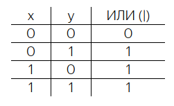
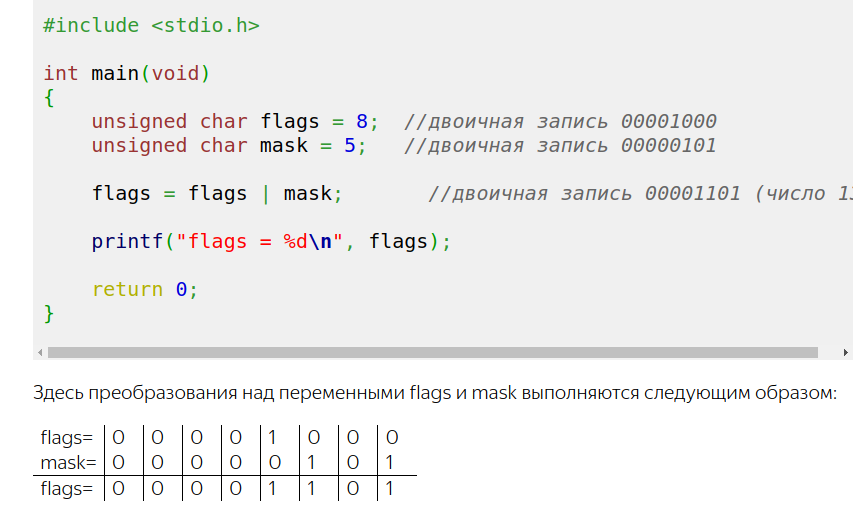
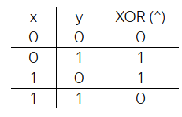
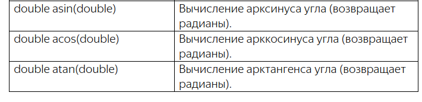
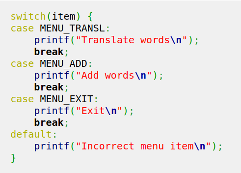
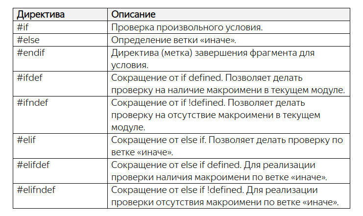

Язык программирования Си
Для изучения C++ рекомендуют сначала освоить Cи.Как я понял, наиболее близким к языку на машинном коде является Ассемблер, далее более понятным человеку является язык С и самым понятным удобным является С++.
Как работать на Cи
Язык C является компилируемым. Это означает, что выполнения программы должен быть создан эксешник этой программы. Сама программа, написанная на C имеет расширение .c
Компилятором для С является программа gcc.
В ubuntu, он автоматически установлен. В Windows его нужно скачивать и устанавливать.
Для скриптов на С создал в домашней папке папку С.
Мой первый скрипт example.c (написан в VSCode):
#include <stdio.h>
int main(void)
{
printf("Hello, world\n");
return 0;
}
|
dmitriy@945G-M3:~/C$ gcc example.cБыл в той же папке создан файл a.out
В терминале выполнял команды: a.out и a.exe.
Команда не найдена
О GCC, компиляции и библиотеках часть 1
Компилятор GCC по умолчанию для unix-систем выдаёт файл с именем a.out, если не используется опция -o.
Любопытно, компиляторы одни из немногих приложений UNIX для которых не безразлично расширение файлов. По расширению GCC определяет что за файл перед ним и, что с ним нужно (можно) сделать. Файлы исходного кода на языке C должны иметь расширение .c, на языке C++, как вариант, .cpp, заголовочные файлы на языке C .h, объектные файлы .o и так далее. Если использовать неправильное расширение, gcc будет работать не корректно (если вообще согласиться, что-либо делать).
Утилита file выводит информацию о типе (с точки зрения системы) переданного в коммандной строке файла, для некоторых типов файлов выводит всякие дополнительные сведения касающиеся содержимого файла.
Выполнил:
dmitriy@945G-M3:~/C$ ./a.out Hello, worldНужно было после точки указать '/'
Процесс компиляции с помощью gcc
Процесс компиляции можно разбить на 4 основных этапа: обработка препроцессором, собственно компиляция, ассемблирование, линковка (связывание).Опции gcc позволяют прервать процесс на любом из этих этапов.
Препроцессор осуществляет подготовку исходного файла к компиляции - вырезает комментарии, добавляет содержимое заголовочных файлов (директива препроцессора #include), реализует раскрытие макросов (символических констант, директива препроцессора #define).
==========================================================================================================================
Структура программ на языке Cи
КомментарийМногострочные комментарии в С заключаются в
/* это комментарий */Открывается слэшем и закрывается слэшем.
Однострочный комментарий пишется после двойного слэша: // комментарий
Обычно однострочный комментарий пишется после команды, чтобы объяснить что эта команда делает.
Директивы предпроцессора
#include <stdio.h>
Все директивы начинаются с символа: #
include - это имя директивы
<stdio.h> - это имя библиотеки, нужная для выполнения команды printf()
stdio от standart input output
расширение .h означает header (заголовок)
Функции
Первая функция в С всегда называется main
int main(void)
{
}
Ключевое слово int означает, что функция main возвращает целые числа.
В скобках находятся параметры функции. Слово void означает отсутствие параметров.
В фигурных скобках находится тело функции.
========================================================================================================================
Системы счисления чисел
Перевод из двоичной системы в десятичную систему
Представление отрицательных целых чисел в двоичной системе
Хорошо, мы с вами только что увидели, как можно кодировать целые положительные числа в восьми битах. А что если нам необходимо представлять и положительные и отрицательные значения? Как это можно было бы сделать? На самом деле подход очень простой и вытекает из только что установленного факта: если из нуля вычесть один, то получим 255. Но ничто нам не мешает вместо 255 кодировать значение -1:0 – 1 = -1
Соответственно, если крайнюю правую шестеренку провернуть назад еще один раз, то получим уже значение -2:Поворачивая еще раз назад, будем получать следующие отрицательные числа -3, -4 и так далее:
1 1 1 1 1 1 1 1 = -1 1 1 1 1 1 1 1 0 = -2 1 1 1 1 1 1 0 1 = -3 1 1 1 1 1 1 0 0 = -4 …Спрашивается, на каком наименьшем отрицательном следует остановиться? В практике программирования поступают следующим образом. Самый старший бит числа (в данном случае 8-й бит) отводят под знак. Если он равен 1 – число отрицательное, если 0 – число положительное. Следовательно, по нашей схеме формирования отрицательных чисел мы дойдем до:
1 0 0 0 0 0 0 0 = -128
Соответственно, максимальное положительное число равно:
0 1 1 1 1 1 1 1 = 127
Отсюда получаем диапазон для представления отрицательных и положительных чисел в одном байте от -128 до 127.
Конечно, это совсем небольшой диапазон значений и для большинства практических задач его недостаточно. Как быть? Опять же все просто. Можно под хранение целых чисел отвести не один, а два подряд идущих байта:
Тогда диапазон в целых числах составит от 0 до 65535, а для чисел со знаком [-32768; 32767]
Переполнение
При попытке записать число 256 в один байт, мы получим переполнение и, как результат, значение 0. И, наоборот, если из нуля
вычесть один, то получим значение 255:
0 – 1 = 255
Все эти эффекты переполнения следует учитывать, при работе с целыми числами.
Шестнадцатеричная система счисления
Первое, что нам понадобится – это 16 различных цифр. Первые десять логично взять из уже знакомой нам десятичной системы, а
именно в виде следующих арабских обозначений:
0 1 2 3 4 5 6 7 8 9
Не хватает еще шести. Недолго думая, решили в их качестве воспользоваться первыми шестью буквами латинского алфавита:
A, B, C, D, E, F
В результате, цифра A обозначает число 10, B – число 11 и так далее до F – число 15. С помощью этих шестнадцати цифр мы имеем возможность описать любую комбинацию из четырех бит:
0 0 0 0 = 0 0 1 0 0 = 4 1 0 0 0 = 8 1 1 0 0 = C 0 0 0 1 = 1 0 1 0 1 = 5 1 0 0 1 = 9 1 1 0 1 = D 0 0 1 0 = 2 0 1 1 0 = 6 1 0 1 0 = A 1 1 1 0 = E 0 0 1 1 = 3 0 1 1 1 = 7 1 0 1 1 = B 1 1 1 1 = FОпытные программисты эту таблицу знают наизусть. Поэтому, когда они видят какое-либо шестнадцатеричное число, например, 1A, то сразу понимают его двоичное представление на уровне байта:
1A = 00011010
Видите, как это просто и удобно. Мы легко можем переходить из двоичной записи в шестнадцатеричную:
10110001 = B1
И, наоборот, из шестнадцатеричной в двоичную. Именно в этом главное достоинство шестнадцатеричной формы записи для представления данных в вычислительной технике.
Конечно, при необходимости, любое шестнадцатеричное число можно перевести в десятичный вид. Делается это очень просто. Пусть дано некоторое значение, например:
5FC
Представим его вначале как сумму степеней 16-ти:
5FC = 5 * 16 ** 0 + F * 16 ** 1 + C * 16 ** 0
А, затем, вместо F подставим эквивалент из десятичной системы 15, а вместо C – значение 12, получим в итоге искомое число 1532
Для того, чтобы преобразовать число из десятичной системы счисления в шестнадцатеричную,
необходимо выполнить следующие действия.
1. Делим десятичное число на 16 и записываем остаток от деления.
2. Результат деления вновь делим на 16 и опять записываем остаток.
3. Повторяем операцию до тех пор пока результат деления не будет равен нулю.
4. Запишем полученные остатки в обратном порядке и получим искомое число.
Переведем число 100010 в шестнадцатеричную систему:
1000 / 16 = 62 (остаток 8)
62 / 16 = 3 (остаток 14, в шестнадцатеричной системе – E)
3 / 16 = 0 (остаток 3)
Записываем остатки в обратном порядке, получаем результат: 3E8 (в 16 - системе)
======================================================================================================================
Переменные и их базовые типы. Модификаторы unsigned и signed
Для объявления переменной в языке Си сначала указывается тип данных для переменной, а затем, ее имя. На уровне синтаксиса это выглядит следующим образом:<тип переменной> <имя переменной>;Имя переменной – это, по сути, название хранилища (ячейки памяти в 1 байт), где расположено некоторое целое число.
Типы переменных

Здесь под переменную типа char выделяется одна ячейка памяти 8 бит.
int - переменная для целых чисел. Память под нее выделяется 4 ячейки в 32 и 64 - разрядных системах.
double - переменная под вещественные числа.
Переменная типа char может быть безнаковым числом от 0 до 255 или знаковым от -128 до 127.
Чтобы определить тип числа для char существуют два модификатора:
unsigned – беззнаковый;
signed – знаковый (появился в стандарте ANSI C90).
Если при объявлении явно указать:
unsigned char fl_view;
то переменная fl_view будет описывать целые числа в интервале [0; 255]. Если же указать:
signed char fl_view;
то переменная fl_view будет описывать целые числа со знаком в интервале [-128; 127].
Все остальные целочисленные типы (short, int, long, long long) по умолчанию всегда идут как знаковые.
Вещественные типы float и double всегда знаковые и применять к ним эти модификаторы нельзя.
Рекомендации по выбору типов для переменных
Если нам требуется хранить отдельные символы или работать с отдельными ячейками памяти, то для этого существует только один тип char.Если предполагается оперировать целочисленными значениями, то изначально следует подумать о типе int. Этот тип нам может не подойти в двух ситуациях:
если мы создаем в программе большое число целочисленных переменных (от 1000 и более), то следует посмотреть в сторону типа short в целях экономии памяти. Конечно, тип short можно использовать, только если его диапазона значений достаточно для представления данных в рамках решаемой задачи. Иначе, придется опять же обратиться к типу int, или даже типу long.
Типы long или long long (если его поддерживает компилятор) следует использовать только в случае, если диапазон значений int недостаточно.
Наконец, для описания вещественных чисел (чисел с плавающей точкой), следует изначально рассматривать тип double. И обращаться
к типу float только если в программе предполагается создавать много вещественных чисел (от 1000 и более).
Тип long double практически не используется за редким исключением сложных математических вычислений.
----------------------------------------------------------------------------------------------------------------------------
Операция присваивания. Числовые и символьные литералы. Операция sizeof
В языке СИ можно выполнять операции присваивания так:int var, size; size = var = 100;Конечно, эту же программу мы могли бы записать и так: int var, size; var = 100; size = 100; Современные компиляторы в обоих случаях сформируют оптимальный машинный код и корректно переведут эту программу в наборы машинных инструкций. Поэтому, какой вариант присваивания использовать решает сам программист, исходя из удобства оформления программы.
Сразу же отмечу еще один важный момент, связанный с объявлением переменных. Правило хорошего тона предполагает, что все значимые переменные следует объявлять вначале каждого блока операторов (то есть, фигурных скобок). А уже затем, выполнять операции с ними. Именно так сделано в нашей программе: сначала идет объявление двух переменных, а ниже описаны действия с ними. Благодаря этому упрощается понимание и редактирование программ. При необходимости, каждую переменную можно сопроводить поясняющим комментарием. Конечно, это относится только к значимым переменным. Любые другие, временные, можно объявлять в любом месте программы, чтобы визуально она не засорялась лишними деталями.
Инициализация переменных
В языке Си, равно как и во многих других языках высокого уровня, можно определять значение переменной сразу в момент ее объявления. Например, так:int total = 1024;
Визуально это выглядит как обычное присваивание переменной значения. Но в действительности – это совершенно другая операция, которая называется инициализацией переменной. То есть, когда мы объявляем какую-либо переменную (любого типа) и сразу указываем для нее некоторые начальные данные, то в этот момент запускается механизм инициализации этой переменной. Компилятор четко различает эти две ситуации: инициализация и обычное присваивание. На уровне машинных кодов они также могут быть реализованы по разному. Да и синтаксически, как мы в будущем увидим, при инициализации возможные конструкции, которые нельзя использовать при присваивании. А пока на данном этапе достаточно знать и запомнить, что есть процесс инициализации переменных, а есть присваивание данных и, в общем случае, это разные вещи. Для полноты картины приведу еще один пример, когда мы комбинируем обычное объявление и инициализацию переменных:
int total = 1024, buffer;
Целочисленные и символьные литералы
В программировании явно прописанные числовые значения называются числовыми литералами и представляется как целочисленная константа типа int. Почему именно типом int? Так решил создатель языка Си Деннис Ритчи: все целочисленные константы, записанные в программе в десятичном виде, хранить на уровне типа int. Но только в том случае, если число умещается в диапазон этого типа. Напомню, что в современных 32- и 64-битных компьютерах тип int, как правило, составляет 4 байта (32 бита) и описывает диапазон значений: [-2147483648; 2147483647]Если целочисленный литерал положителен и не умещается в этот диапазон, то компилятор подбирает соответствующий размер типов данных в порядке возрастания:
int, unsigned int, long, unsigned long, long long, unsigned long longЕсли же и самого большого недостаточно (что сложно себе представить в реальных задачах), то компилятор выдаст ошибку.
Язык Си позволяет определять в программе числовые литералы еще в шестнадцатеричной и восьмеричной форме. Делается это очень просто, например:
int dec, hex, oct; dec = 100; hex = 0x1FA; oct = 0123;Здесь 100 – это десятичная форма записи; 0x1FA – шестнадцатеричная (число 1FA); 0123 – восьмеричная. То есть, для записи шестнадцатеричных чисел перед ними ставится префикс в виде символов «0x», а для записи восьмеричных – префикс в виде нуля. Так можно прописывать любые числа в нужном нам формате. Разумеется, на уровне машинных кодов они представляются единым образом в виде набора бит и запись числовых литералов в той или иной форме служит исключительно для удобства восприятия программистом. Не более того.
Но с шестнадцатеричными и восьмеричными литералами есть один важный нюанс. Их компилятор изначально представляет не типом int, как десятичные, а типом unsigned int. Соответственно, если литерал не умещается в этот тип, то берутся другие больших размеров в порядке:
unsigned int, unsigned long, unsigned long longПри желании мы можем явно указать компилятору тип числового литерала. Для этого используются следующие суффиксы:
- U или u – использование модификатора unsigned в определении литерала;
- L или l – использование типа long при определении литерала;
- LL или ll – использование типа long long при определении литерала.
int dec_i, dec_ui, dec_l, dec_ul; dec_i = 100; // тип литерала int dec_ui = 100U; // тип литерала unsigned int dec_l = 100L; // тип литерала long dec_ul = 100UL; // тип литерала unsigned longТип char
Тип char формально определен и как символьный и как целочисленный. Первый вопрос, как такое может быть? На самом деле все очень просто. Объявим переменную этого типа, например:
char ch;
а, затем, присвоим ей какой-либо символ, например, буквы d:
ch = 'd';
Обратите внимание, как прописан символ в тексте программы: он заключен в одинарные кавычки (их еще называют апострофами). И
только так можно определять символьные литералы в языке Си. Когда компилятор видит одинарные кавычки, то он воспринимает
информацию в них, как символ. Никакие другие кавычки для этого использовать нельзя. Например, двойные зарезервированы для
определения строк, поэтому запись:
ch = "d";
приведет к ошибке на этапе компиляции. Если же совсем убрать кавычки, то символ d в программе будет восприниматься как
переменная:
ch = d;
Поэтому следует запомнить, что для определения символьного литерала используются только одинарные кавычки.
Вещественные литералы
Помимо целочисленных в программе можно прописывать и вещественные литералы. Определять их можно следующими способами:double d1, d2, d3, d4; d1 = 10.0; d2 = -7.; d3 = 1e2; d4 = 5e-3;Все вещественные литералы компилятор языка Си по умолчанию имеют тип double. Соответственно, математические операции с числами 10.0 и -7.0 будут выполняться несколько иначе, чем с аналогичными целыми числами. Это следует иметь в виду.
Последние два варианта – запись числа в экспоненциальной форме:
<число>e<степень десятки>
Такую форму удобно использовать в научных расчетах, когда используются или очень маленькие или очень большие числа. В любом случае экспоненциальная форма переводится в вещественное число типа double, даже если оно математически является целым, а не дробным.
Перед e всегда должно стоять число
При желании мы можем явно указать компилятору переводить вещественный литерал в тип float. Для этого после числа следует прописать суффикс f, например, так:
d1 = 10.0f;
В такой записи вещественное число 10.0 будет представляться типом float, а не double. Это бывает полезно, когда используется
переменная типа float и ей правильно было бы присвоить значение того же типа:
float var_f;
var_f = 10.0f;
Тогда компилятор не выдаст предупреждение (warning) о возможной потере данных в момент присваивания значения переменной var_f.
Операция sizeof
Операция sizeof возвращает число байт, занимаемых в памяти переменной или, отведенных под тип данных. Синтаксис этой операции следующий:sizeof(<тип | имя переменной>); sizeof <имя переменной>;Обратите внимание, во втором случае мы можем записать ключевое слово sizeof без круглых скобок, но тогда эта операция применяется только к переменным, но не к типам. Чтобы не запоминать эти тонкости, обычно sizeof записывают с круглыми скобками и указывают либо тип данных, либо имя переменных. Например:
int size_float = sizeof(float); int size_var_f = sizeof(var_f);На выходе получаем число байт, которое занимает тип float и переменная var_f. Соответственно:
int size_ch = sizeof(char);
всегда равно единице.
Заключение
Итак, на этом занятии вы должны хорошо понимать, как работает операция присваивания и инициализация переменных в языке Си.
Знать, как записываются и представляются на уровне машинных кодов числовые и символьные литералы, а также какие суффиксы у них
можно пописывать. И, конечно же, уметь применять операцию sizeof для определения размера типа данных или переменной.
==============================================================================================================================
Стандартные потоки ввода/вывода. Функции putchar() и getchar()
На уровне операционной системы, как правило, имеются три стандартных потока ввода/вывода:- stdout – поток вывода информации (как правило, на монитор);
- stderr – поток вывода ошибок (как правило, на монитор);
- stdin – поток ввода информации (как правило, с клавиатуры).
На программном уровне все эти потоки организованы в виде буферов приема или передачи информации. То есть, данные сначала поступают в буфер, а затем, уже либо на устройство вывода, либо в переменные программы. Это очень важный момент. Данные поступают в программу, например, с клавиатуры, не напрямую, а через буфер ввода. То же самое с выводом. Сначала данные из программы попадаю в буфер вывода и только потом, например, отображаются на мониторе или записываются в файл. Запомним этот момент. Он нам в будущем пригодится.
Функции для работы со стандартными потоками
Язык Си предоставляет набор библиотечных функций для работы со стандартными потоками ввода/вывода. Мы рассмотрим некоторые из них, которые наиболее часто используются на практике:- putchar() – вывод символа через поток stdout;
- printf() – форматный вывод строки через поток stdout;
- perror() – вывод ошибок в виде строки через поток stderr;
- getchar() – чтение одного байта (символа) из потока stdin;
- scanf() – форматный ввод данных из потока stdin.
#include <stdio.h>
Функция getchar()
Давайте рассмотрим эти функции и начнем с getchar(). Она имеет следующее определение:int getchar(void);
Целочисленный тип int перед функцией означает, что она возвращает целое число, а void в круглых скобках говорит об отсутствии каких-либо параметров. Поэтому мы можем вызвать ее в программе следующим образом:
#include <stdio.h>
int main(void)
{
int value = getchar();
return 0;
}
После запуска этой программы будет ожидаться ввод значения в поток stdin. Так как он по умолчанию ассоциирован с клавиатурой,
то нам нужно набрать один символ, любой, например, буквы 's' и нажать клавишу Enter. После этого программа продолжится,
перейдет к следующему оператору return и завершится.
Я напомню, что функция getchar() предназначена для чтения одного байта из входного потока stdin. И здесь возникает вопрос, почему эта функция возвращает целое число типа int, а не данные типа char, который и описывает один байт памяти? Дело в том, что стандартный поток ввода работает несколько более сложным образом, нежели просто выдача очередного байта из буфера. В частности, он дополнительно генерирует некоторые служебные значения. Например, значение: EOF (End of File – конец файла) которое определено как -1 в заголовочном файле stdio.h. То есть, помимо байтового диапазона [0; 255] целых чисел функция getchar() дополнительно может вернуть значения вне этого диапазона, в частности, -1.
Вам может показаться странным, что мы говорим про константу EOF, когда речь идет о вводе данных с клавиатуры? Но, во-первых, стандартный поток ввода stdin вполне можно связать с файлом и тогда данные будут читаться из него, а не с клавиатуры и при достижении конца файла будет сгенерировано значение EOF. И, во-вторых, при вводе с клавиатуры мы также можем симитировать достижение конца файла путем ввода специального символа комбинацией клавиш Ctrl+Z для ОС Windows и Ctrl+D для ОС Linux.
Таким образом, функции getchar() нужно возвращать целые значения, превышающий байтовый диапазон [0; 255]. Поэтому разработчик языка Си решил использовать тип int.
Функция putchar()
Следующая аналогичная функция – это putchar(), которая служит для вывода одного байта (символа) в выходной поток stdout и определена следующим образом:int putchar(int ch);
Она также возвращает целое число типа int и в качестве аргумента принимает целое значение этого же типа int. В действительности, тип int здесь использован для сопряжения (по типам данных) с функцией getchar(). Иначе бы можно было прописать тип char, так как функция putchar() в качестве аргумента принимает код символа в диапазоне [0;255]. Любое другое значение за пределами этого диапазона просто будет приводиться к восьми битам и затем помещаться в выходной поток stdout. Возвращает эта функция код символа, переданного в выходной поток:
#include <stdio.h>
int main(void)
{
int value = getchar();
int res = putchar(value);
printf("\n%d\n", res);
return 0;
}
При выполнении этой программы, нам необходимо будет ввести какой-либо символ с клавиатуры, и затем, он продублируется вызовом
функции putchar(). Возвращаемое значение (код введенного символа) будет выведено на экран с помощью функции printf().
Буферы приема/передачи стандартных потоков
На протяжении всего занятия я акцентрирую ваше внимание на наличие буферов приема/передачи информации у стандартных потоков ввода/вывода. При запуске программы они пустые, в них нет никаких посторонних значений. Но, в процессе ввода или вывода информации они заполняются и это может повлиять на ход исполнения программы.Давайте я это покажу на конкретном примере. Запишем два подряд идущих вызова функции getchar() следующим образом:
#include <stdio.h>
int main(void)
{
int value1 = getchar();
int value2 = getchar();
printf("%c %c\n", value1, value2);
return 0;
}
И после запуска этой программы введем с клавиатуры два символа: ds. В результате, оба символа помещаются во входной буфер,
первый считывается при первом вызове функции getchar(), а второй – при втором вызове функции getchar(). Поэтому программа не
ждет от нас ввода какой-либо дополнительной информации, а сразу переходит к функции printf(). Соответственно в переменной
value1 будет храниться код символа d, а в переменной value2 – код символа s. Затем, функция printf() выводит на экран оба
прочитанных символа.
Вот наглядный эффект работы входного буфера. Мало того, если бы мы ввели не два, а, скажем, три символа, то после чтения первых двух, последний так бы и остался во входном буфере до момента завершения программы. При завершении, все буферы автоматически очищаются.
=======================================================================================================================
Работа с указателями
Оперативная память представляет собой набор ячеек памяти, каждая ячейка имеет размер 1 байт и имеет свой уникальный адрес.Когда объявляем переменную, тем самым выделяем под нее память.
В зависимости от типа переменная может храниться на разных количествах ячеек (char - 1 ячейка, int - обычно 4 ячейки, double - 8 ячеек) и адрес переменной будет равен адресу 1 ячейки выделенной под переменную.
Для того чтобы менять содержимое ячеек не обращаясь к ним по имени переменной, которая там хранится, служат указатели. Мы можем не знать какая переменная хранится в той или иной ячейке памяти, но с помощью указателя можем работать с памятью. Указатели служат для записи и считывания данных из произвольных ячеек памяти. Это еще называется прямым доступом к памяти.
Указатели представляют собой переменную, которая является целым числом и это число равно адресу ячейки памяти. Размер указателя в памяти определяется разрядностью системы. Если система 32-х разрядная, то указатели занимают 4 байта; если 64-х разрядная, то 8 байт.
Объявление указателя
Общий синтаксис здесь такой:<тип данных> *<имя указателя>;
Вначале указываем тип данных, с которым будет работать указатель. Затем ставится звездочка и следом прописывается имя
указателя. Обратите внимание, сам по себе указатель всегда хранит лишь адрес переменной и имеет фиксированный размер (4 байта
для 32-х разрядных систем; 8 байт для 64-х разрядных систем). Тип, который мы указываем вначале, относится не к указателю, а к
типу данных, с которыми его предполагается использовать.
Мы можем в одном операторе объявить сразу несколько указателей одного и того же типа. Например:
short *a, * b, *c; // три указателя
Какой смысл в этих указателях?
Как пользоваться указателями относительно понятно, а вот зачем ими пользоваться, для чего они нужны вообще не понятно, не могу представить себе их практическое применение.Однажды тебе нужно будет написать программу, в которой переменная из функции main() передаётся в другую функцию и изменяется в ней. Используя обычные переменные ты обнаружишь, что они изменяются только в рамках функции, где были объявлены. То есть изменив значение переменной вне функции main(), в самой функции main() её значение останется неизменным, т.к в другой функции создаётся лишь копия передаваемой переменной. Чтобы всё-таки изменить значение переменной в другой функции используют указатель на данную переменную, работая напрямую с адресом переменной, а не с её копией
Конечно, сейчас у вас может возникать вопрос зачем все это надо? Есть же переменные и с ними можно работать напрямую? Какой смысл в этих указателях? Но, все по порядку. И первый правильный вопрос такой: как нам в реальной программе узнать адрес расположения переменной?
Предположим, что мы хотим через указатель взаимодействовать с байтовой переменной d. В реальности, переменная d может находиться в любой доступной ячейке памяти. Как же узнать номер этой ячейки? И здесь все очень просто. В языке Си есть специальный оператор, который возвращает адрес переменных. Он определяется символом амперсанд и записывается перед именем переменной. Например, так:
gpt = &d;
В результате указатель gpt будет содержать адрес переменной d, где бы она ни располагалась в памяти. Как только мы присвоили указателю адрес переменной, то говорят, что указатель указывает (ссылается) на эту переменную. Это универсальная конструкция. И, обратите внимание, здесь мы прописываем указатель без символа *, так как присваиваем ему адрес. Если записать указатель в двух формах:
gpt = 0; // указатель перемещаем на ячейку с адресом 0 *gpt = 0; // в ячейку на которую указывает указатель gpt записываем число 0.то в первой строчке присваивается адрес, с которым, затем, этот указатель может работать, а во второй заносим значение 0 в ячейку памяти с адресом 0.
char x = *gpt; // считывание значения из ячейки памяти *gpt = 100; // запись значения 100 в ячейку памятиКогда перед именем указателя стоит символ *, его следует воспринимать не как адрес ячейки, а как переменную типа char, которая хранится по адресу указателя. Соответственно, команда «x = *gpt;» будет выполнять чтение данных из этой переменной, а команда «*gpt = 100;» - запись значения 100 в эту переменную. И, так как переменная *gpt и переменная d располагаются в одной и той же ячейке, то сначала будет прочитано значение 10 и присвоено переменной x, а затем, переменная d будет изменена на значение 100. Сама операция *, записанная перед именем указателя (после его объявления), называется операцией разыменования.
Итак, мы теперь готовы написать свою первую программу с использованием указателей. Пусть она делает ровно то, о чем я только что рассказывал: меняет значение переменной d через указатель gpt:
#include <stdio.h>
int main(void)
{
char d = 10;
char *gpt;
gpt = &d;
printf("gpt = %p, *gpt = %d, d = %d\n", gpt, *gpt, d);
*gpt = 100;
printf("gpt = %p, *gpt = %d, d = %d\n", gpt, *gpt, d);
return 0;
}
После выполнения программы увидим строчки:
gpt = 0062ff1b, *gpt = 10, d = 10 gpt = 0062ff1b, *gpt = 100, d = 100Можно объединить две строчки:
char *gpt; gpt = &d;в одну следующим образом:
char *gpt = &d; // сразу объявляем указатель и направляем его на переменную d
На первый взгляд, кажется, что мы используем форму записи указателя со звездочкой, а значит, присваиваем ему не адрес, а заносим некоторое значение по какому-то адресу. Но это не так. Здесь определена операция инициализации указателя, а не присваивания. Когда мы говорили о переменных, то я отмечал этот факт. Если в момент объявления переменных мы им сразу что-либо присваиваем, то отрабатывает операция инициализации, которая, в общем случае, отличается от операции простого присваивания. Здесь, как раз тот самый случай. При инициализации указателя ему присваивается адрес, а звездочка записана для объявления переменной gpt как указателя, а не просто как обычной переменной. Инициализатор это прекрасно «понимает» и заносит в указатель адрес переменной d. Этот момент также следует понимать. Он часто используется на практике.
Присваивание указателей. Приведение типов указателей
Пусть имеются переменные:int arg = 7; int *ptr_arg, *ptr; ptr_arg = &arg;Хотим чтобы и второй указатель ptr тоже ссылался на переменную arg. В данном конкретном случае можно поступить двумя способами. В первом также взять адрес переменной и присвоить второму указателю:
ptr = &arg;
А во втором, присвоить одному указателю значение другого:
ptr = ptr_arg;
Немного модифицируем программу и у второго указателя ptr поменяем тип данных с int на char:
#include <stdio.h>
int main(void)
{
int arg = 777;
int *ptr_arg;
char *ptr;
ptr_arg = &arg;
ptr = ptr_arg;
return 0;
}
При компиляции увидим предупреждение, что мы пытаемся присваивать разные несовместимые типы, с которыми работают указатели:
assignment to 'char *' from incompatible pointer type 'int *'Однако бывают (и не редко) ситуации, когда действительно в программе нужно указателю одного типа данных присвоить значение указателя, работающего с другим типом данных. В этом случае следует явно прописать операцию приведения типов для указателей. Делается это следующим образом:
ptr = (char *)ptr_arg;
То есть, прописываются круглые скобки и в них указывается тот тип указателя, к которому он приводится. Тогда компилятор «поймет», что программист сознательно делает такую операцию и не выдает никаких предупреждений. Программа, разумеется, будет работать без каких-либо изменений.
Приведение типов для указателей следует прописывать всегда, когда типы различаются, кроме одного случая, когда указатель объявлен с обобщенным типом void:
void *p;
Тогда мы можем совершенно свободно ему присваивать адреса любых других указателей:
p = ptr;
И, наоборот, его присваивать любым другим:
ptr_arg = p; Компилятор в этих случаях не будет выдавать никаких предупреждений. Фактически, этот тип void* введен в язык Си исключительно для хранения адресов и их последующего присваивания другим указателям. При этом сам указатель с типом void* нельзя использовать для работы с ячейками памяти.
Проблемы, сокрытые в указателях
- указатель ссылается на произвольную (не выделенную) область памяти и в нее происходит запись некоторого значения;
- в программе динамически выделяется память (с помощью функции malloc), но не освобождается (утечка памяти).
#include <stdio.h>
int main(void)
{
int *ptr;
*ptr = 1;
return 0;
}
Такая программа скомпилируется и запустится. Но, очень вероятно, что завершится с ошибкой.Очевидно, мы пытаемся записать число 1 в некоторую область памяти, которая может быть отведена под какие-то другие задачи. Нельзя вот так запросто, куда угодно что-либо записывать. Сначала нужно запросить у операционной системы свободную область памяти, сказать, что мы ее будем использовать для нужд программы, а уже потом записывать туда данные. Только так. Никак иначе. И этот процесс запроса памяти называется в программировании выделением памяти. Когда мы объявляем ту или иную переменную, то как раз автоматически запускается этот процесс выделения памяти. Поэтому в ячейки, занятые переменной, мы совершенно спокойно можем что-либо записывать и считывать.
Константа NULL
Но все же, очень часто бывают ситуации, когда в нашем распоряжении имеется некий указатель и нам бы хотелось знать: указывает ли он на выделенную область, с которой можно работать, или на произвольную, то есть, указатель не был инициализирован? В языке Си нет встроенного механизма, который бы позволял гарантированно отвечать на этот вопрос. Но один прием довольно часто используется на практике. Ничто не мешаем нам договориться, если указатель принимает некоторое строго предопределенное значение, значит, он еще не был инициализирован. А иначе, ссылается на выделенную область памяти. Что может здесь выступать в качестве предопределенного значения? В языке Си для этого используется специальная константа NULL, определенная с помощью директивы define в заголовочном файле stdio.h:int *ptr = NULL;Для разных ОС макрос NULL может принимать разные значения. В моем случае – это нулевой указатель, заданный в виде:
#define NULL ((void *)0)То есть, фактически, мы присваиваем указателю нулевой адрес, который будет означать, что он пока не ссылается на выделенную область и записывать данные в эти ячейки не нужно. Проверку этого условия можно записать так:
#include <stdio.h>
int main(void)
{
int arg = 5;
int *ptr = NULL;
if(ptr != NULL)
*ptr = 1;
return 0;
}
После запуска программа выполнится и завершится без ошибок. При этом команда «*ptr = 1;» выполнена не будет. Если же изменить
значение указателя:
ptr = &arg;
то условие станет истинным и значение переменной arg будет изменено на единицу.
Вот так с помощью предопределенной константы NULL можно контролировать значение указателя на выделенную область памяти. Хотя, конечно, этот прием не дает гарантии. Вполне может возникнуть ситуация, когда указатель не будет равен NULL и при этом ссылаться на невыделенную область. Но это уже ложится на плечи программиста.
Адресная арифметика
Значение указателя меняется на размер типа данных, для которого он определен.Пример:
int g = 4;
int *ptr = &g;
printf("ptr = %u\n", ptr); //выведет ptr = 6487832
ptr++;
printf("ptr = %u\n", ptr); //выведет ptr = 6487836
Когда мы работаем с указателями, а не с обычными переменными, то целочисленные арифметические операции выполняются в
соответствии с правилами адресной арифметики. В частности, увеличение на единицу означает, что нам нужно перейти к следующей
порции данных в памяти компьютера, а не к следующей ячейке. Именно поэтому адрес указателя увеличивается на размер типа
данных, для которого он объявлен. В нашем примере – это тип int, который занимает 4 байта. Поэтому увеличивая на единицу
значение адреса указателя ptr, мы получаем прибавку на эти четыре байта. Отсюда и получается такой результат.
Операции в адресной арифметике только над целочисленными числами. В них должны фигурировать или целочисленные литералы или целочисленные переменные. Другие типы здесь использовать недопустимо. Также нельзя использовать операции умножения и деления. Исключение составляет только одна операция вычисления разности между двумя указателями, когда в операндах не используются целочисленные типы. Причем эта операция имеет смысл исключительно с элементами одного массива. Давайте посмотрим, как она работает на следующем примере:
#include <stdio.h>
int main(void)
{
short ar[10];
short *ptr = ar;
short *p = &ar[3];
printf("ptr = %u, p = %u\n", ptr, p);
int res = p - ptr;
printf("res = %d\n", res);
return 0;
}
Смотрите, здесь объявлен массив ar и два указателя с инициализацией на адрес первого элемента и третьего элемента массива ar.
После этого вычисляется разность между указателями p и ptr и результат заносится в обычную целочисленную переменную res.
После запуска программы увидим результат:
ptr = 6487808, p = 6487814 res = 3Почему видим значение 3 в переменной res? Конечно, здесь выполняется адресная арифметика, которая возвращает расстояние в памяти между этими двумя элементами одного массива, причем расстояние выражено не в байтах, а в типе short, который занимает 2 байта. Фактически, значение res вычисляется по формуле:
res = (6487814 – 6487808) / 2 = 3
Приоритеты операций при работе с указателем
for(int i = 0;i < sizeof(g); ++i)
printf("%d ", *ptr++);
Здесь у нас две унарные операции ++ и * применяются к указателю ptr. Спрашивается, в каком порядке будут происходить
вычисления? Здесь следует вспомнить, что приоритет унарных операций убывает справа-налево. Поэтому сначала идет инкремент в
постфиксной форме и только затем операция разыменования. Это эквивалентно такой записи:
*(ptr++)
Так как инкремент записан в постфиксной форме, то вначале мы получаем текущее значение ptr, к нему применяется операция * и только после этого адрес увеличивается на единицу.
А вот если инкремент записать в префиксной форме:
for(int i = 0;i < sizeof(g); ++i)
printf("%d ", *++ptr);
то это будет эквивалентно записи:
*(++ptr)
Здесь сначала адрес указателя увеличивается на единицу и только после этого срабатывает следующая операция разыменования. Поэтому байты будут прочитаны со сдвигом вправо на одну ячейку.
Имеется следующий фрагмент программы:
int g = 476789; int *p = &g; *p += 1;Спрашивается, как будет работать последняя строчка? Рассуждаем здесь подобным образом. Так как операция * является унарной, то она обладает большим приоритетом, чем операция +=. Поэтому здесь сначала будет прочитано значение переменной g, затем, оно увеличивается на единицу и результат снова заносится в те же ячейки памяти, где расположена переменная g. В итоге, значение указателя p не изменится, а переменная g станет на единицу больше.
int g = 476789;
char *ptr = (char *)&g;
int x = *ptr + 1;
printf("x = %d\n", x);
return 0;
}
И спрашивается, чему будет равно значение переменной x? То есть, как отработает операция «*ptr + 1»? Очевидно, здесь приоритет
унарной операции * выше, чем у бинарной операции сложения. Поэтому, сначала будет прочитано значение из первого байта
переменной g – это число 117, а затем, к нему будет прибавлена единица. В итоге x будет содержать число 118.
А вот если эту же строчку записать с круглыми скобками следующим образом:
int x = *(ptr + 1);
то ситуация кардинально меняется. Сначала будет увеличен адрес на единицу, мы перейдем к следующей ячейке переменной g, и переменной x будет присвоено значение этой второй ячейки. В итоге она будет принимать значение 70.
И раз еще давайте посмотрим на работу команды:
int x = *ptr++;
Такая запись указателя с операцией инкремента и разыменованием часто используется в практике программирования. В итоге мы здесь читаем значение из текущей ячейки, и только после этого адрес указателя увеличивается на единицу. Но, если мы это же выражение запишем в виде:
int x = (*ptr)++;
то операция инкремента будет применена уже к данным в первой ячейке переменной g. В итоге переменной x присвоится начальное значение из первой ячейки, а переменная g станет содержать число:
476790 = 118 + 256 ∙ 70 + 256^2 ∙ 7
Объясните, пожалуйста, по какому алгоритму разложено число 476789 = 117 + 256 ∙ 70 + 256^2 ∙ 7? С точки зрения системы счисления? То есть так можно любое 10- тичное число разложить в таком представлении, есть формула? И как это привязано к адресу? Ведь по адресу одна ячейка памяти может хранить 255 различных значений от 0 до 1111 1111 в двоичном представлении. Почему именно первая ячейка, адрес которой является указатель, хранит 0111 0101, то есть 117? Как этот перевод осуществляется, на уровне компилятора? Не ужели так жёстко связаны адреса и сами октеты байтов с хранимым числом? Вопрос идёт про 4 байтный int. Есть ли другие источники объясняющие это? К чему такой вопрос. Когда мы переводим 476789 в 32 bit u то получаем вот такое двоичное число 0000 0000 0000 01110100011001110101. Но первый актер не равен 0111 0101.
Одна ячейка может хранить 256 различных значений, и каждый байт можно представить как цифру из системы счисления с основанием 256. Перевод из десятичной системы осуществляется точно так же, как и в любую другую - делением нацело. А такой порядок связан с тем, что архитектура x86 (и x86-64) использует little-endian порядок байтов. Это означает, что младший байт (в котором записан конец числа) будет иметь меньший номер, и на самом деле 32-битное число 476789 = [0000 0000] [0000 0111] [0100 0110] [0111 0101] будет записано как:
Адрес Значение ptr+0 0111 0101 ptr+1 0100 0110 ptr+2 0000 0111 ptr+3 0000 0000
Пример использования адресной арифметики
Пусть в программе объявляется целочисленная переменная типа int и ставится задача просмотреть побайтно содержимое этой переменной в памяти компьютера. Сделать это можно следующим образом:
#include <stdio.h>
int main(void)
{
int g = 476789;
char *ptr = (char *)&g;
for(int i = 0;i < sizeof(g); ++i) {
printf("%d ", *ptr);
ptr++;
}
return 0;
}
Смотрите, мы здесь формируем указатель, который работает с байтовыми данными, то есть, с отдельными ячейками памяти. Затем,
ему присваивается адрес целочисленной переменной g и в результате он ссылается на первый байт этой переменной. После этого в
цикле for осуществляется вывод текущего значения байта на экран и указатель ptr увеличивается на единицу. Так как тип у него
прописан как char, то операция инкремента увеличит адрес ptr ровно на один и мы перейдем к следующему байту. Соответственно,
на следующей итерации будет выведено значение очередного байта и так для всех ячеек переменной int. В итоге на экране увидим
числа:
117 70 7 0
которые в точности определяют число:
476789 = 117 + 256 ∙ 70 + 256^2 ∙ 7
===========================================================================================================================
Функция printf() для форматированного вывода
Название функции – это сокращение от английских слов:print formatted (форматированный вывод)А само определение (прототип) функции следующее:
int printf(const char* format, …);Первый параметр format – это указатель на строку. Пока его можно воспринимать просто как строку, в которой определен формат для вывода информации в стандартный поток stdout. А троеточие определяет произвольное число дополнительных параметров. Обычно, это переменные или выражения, значения которых следует выводить в заданном формате. В качестве возвращаемого типа указан int, то есть функция возвращает целое число. Это число соответствует количеству выведенных символов в стандартный поток stdout (в нашем случае на экран). Обычно, на практике, этим значением пренебрегают и вызывают функцию printf(), как говорят, ради побочного эффекта, т.е. ради передачи данных в выходной поток.
В самом простом варианте мы с вами использовали эту функцию для вывода строки на экран:
#include <stdio.h>
int main(void)
{
printf("Hello, World!\n");
return 0;
}
Итак, первый параметр format функции printf() определяет не просто выводимую строку, а формат выдаваемых данных. И для этого в
нашем распоряжении имеются, так называемые, спецификаторы преобразования. Основные из них следующие:
Примеры:
int var_i = 1208;
printf("value = %d\n", var_i); - вывод переменной var_i в десятичной форме.
Вывод: value = 1208
printf("value = %x\n", var_i); - вывод переменной var_i в шестнадцатеричной форме.
Вывод: value = 4b8
printf("value = %f\n", var_i);
для вывода значение переменной var_i как вещественное число, то ошибки никакой не будет, но отображаемое значение будет,
конечно же, некорректным: value = 0.000000
Но, если изменить тип переменной var_i на вещественный:
double var_i = 1208;
то увидим правильное значение:
value = 1208.000000
Суффиксы типов для спецификаторов
Целочисленные типы char и short, при передаче значений функции printf(), автоматически приводятся к типу int. Поэтому спецификатор %d охватывает все три типа: char, short, int. Если же переменная имеет тип long или long long, то перед спецификаторами допустимо прописывать малые буквы l и ll соответственно:- l – суффикс для типов long или unsigned long;
- ll – суффикс для типов long long или unsigned long long.
printf("value = %lld\n", -12345678901234LL);
printf("value = %llu\n", 12345678901234LL);
Если при выводе в спецификаторах убрать буквы ll, то значение будет отображено некорректно:
printf("value = %d\n", -12345678901234LL);
Увидим:
value = -1942892530Аналогично и с вещественными типами: float автоматически преобразовывается в double, поэтому спецификаторы %f, %F, %e и %E корректно обрабатывают оба из них. А вот для типа long double следует прописывать суффикс в виде заглавной буквы L:
L – суффикс для типа long double.
Например:
long double var_ld = 0.5;
printf("value = %Lf\n", var_ld);
Увидим строку:
value = 0.500000
Но, при использовании спецификатора без суффикса L, вывод окажется некорректным:
printf("value = %f\n", var_ld);
На выходе:
value = -0.000000
Так с помощью суффиксов учитываются все базовые типы переменных языка Си.
Вывод нескольких переменных
Конечно, с помощью функции printf() можно выводить сразу несколько переменных в одной форматной строке. Делается это очевидным образом. Достаточно указать нужное количество спецификаторов, а затем, перечислить такое же количество переменных или выражений. Например, для вывода трех переменных разного типа:short var_h = 100; int var_i = 1024; long double var_ld = 0.5;Функцию printf() можно записать в виде:
printf("var_h = %d, var_i = %d, %Lf\n", var_h, var_i, var_ld);
Флаги спецификаторов
Каждый спецификатор может быть дополнительно снабжен, так называемыми, флагами, которые предоставляют возможность более тонкой настройки выводимой информации.

int var_i = -1283;
double var_d = 54.34675;
printf("[%12.7d]\n", var_i);
printf("[%12.2f]\n", var_d);
В случае с вещественными числами, значение 12 определяет общую минимальную ширину вывода, а число после точки (2) – точность
выводимого значения. После запуска программы увидим:
[ -0001283] [ 54.35]
==========================================================================================================================
Функция scanf() для форматированного ввода
Эта функция выполняет форматированное чтение данных из стандартного входного потока stdin и имеет следующее определение (прототип):int scanf(const char* format, …);Здесь первый параметр format – это указатель на форматную строку, на подобие той, что мы рассматривали в функции printf(). Последующее троеточие указывает на произвольное число дополнительных параметров, как правило, переменных. Функция возвращает целое значение типа int, равное числу прочитанных элементов из входного потока stdin.
Чтобы воспользоваться функцией scanf() нужно знать, как правильно задавать формат считываемых данных. Для этого, также как и в функции printf(), предусмотрены спецификаторы преобразований. Но они несколько иные.
Самый простой вариант использования функции scanf() соответствует чтению отдельных символов из входного потока. Для этого, очевидно, следует использовать спецификатор «%c» следующим образом:
#include <stdio.h>
int main(void)
{
char byte;
int count = scanf("%c", &byte);
printf("count = %d, byte = %c\n", count, byte);
return 0;
}
Давайте подробно разберемся, как это работает. Так как в форматной строке записан спецификатор «%c», то функция scanf() читает
один байт из буфера входного потока stdin. Предположим, там находятся числа 100 и 53. Значит, функция читает первое значение
100. Далее, необходимо этот байт данных скопировать в переменную byte. И здесь возникает вопрос, как это сделать? Вначале, я
напомню, что любая переменная – это непрерывная последовательность байт. В нашем примере – это одна ячейка, т.к. переменная
byte имеет тип char. А значение переменной определяется тем, что записано в этих ячейках. То есть, для записи прочитанных
данных из входного потока stdin в переменную byte достаточно в соответствующую ячейку памяти скопировать эти прочитанные
данные. Именно поэтому функции scanf() передается не значение переменной (как это было в функции printf()), а адрес переменной.
Забегая вперед отмечу, что оператор & перед именем переменной, как раз и возвращает адрес этой переменной. Зная этот адрес,
функция scanf() имеет возможность менять значение переменной byte, записывая определенные данные напрямую в указанную ячейку
памяти. Так происходит передача данных из входного потока в указанные переменные с помощью функции scanf().
Если данные были успешно прочитаны и занесены в переменную byte, то функция scanf() возвратит значение 1. Это говорит нам, что в одну переменную были успешно занесены данные из потока stdin.
Давайте для примера запишем два подряд вызова функции scanf() следующим образом:
#include <tdio.h>
int main(void)
{
char byte1 = '0', byte2 = '0';
int res1 = scanf("%c", &byte1);
int res2 = scanf("%c", &byte2);
printf("byte1 = %c, byte2 = %c\n", byte1, byte2);
return 0;
}
Если при запуске программы введем сразу два символа, например cd, то во входном буфере окажутся эти символы и второй вызов
функции scanf() автоматически прочитает букву d. После запуска программы увидим результат:
byte1 = c, byte2 = d
То есть, здесь всегда следует помнить о входном буфере и если в нем имеется какая-либо информация, то последующий вызов функции scanf() будет читать эти данные, не ожидая ввода с клавиатуры новых данных.
Конечно, эти два вызова можно объединить в один, например, так:
int res = scanf("%c%c", &byte1, &byte2);
printf("res = %d: byte1 = %c, byte2 = %c\n", res, byte1, byte2);
После ввода тех же символов cd, увидим строку:
res = 2: byte1 = c, byte2 = d
Обратите внимание, переменная res принимает значение 2, т.к. данные были успешно записаны в две переменные byte1 и byte2. Перед каждой переменной базового типа не забываем прописывать оператор амперсанд.
Пока, я думаю, все понятно. Давайте теперь поставим символ пробела между спецификаторами в форматной строке:
int res = scanf("%c %c", &byte1, &byte2);
Этот пробел означает любые пробельные символы, которые могут присутствовать между двумя порциями данных. Сразу отмечу, что к пробельным относят символы: пробела, перевода строки, табуляции (и реже некоторые другие). Кроме того, этот символ может и вовсе отсутствовать. Например, мы можем ввести с клавиатуры два символа следующими способами:
cd; c d; c d; c\nd; c\tdВо всех вариантах будут прочитаны два символа c и d и занесены в переменные byte1 и byte2. То есть, форматная строка "%c %c" указывает сделать следующее: прочитать первый символ из входного буфера (любой символ), затем, пропустить все пробельные символы и прочитать следующий не пробельный.
А теперь давайте вместо пробела поставим, например, запятую:
int res = scanf("%c,%c", &byte1, &byte2);
При таком формате ввода будет ожидаться первый символ (любой), затем обязательно должна идти запятая, а затем еще один любой символ. Например, так:
c,d
А вот если входные данные не соответствуют формату, например:
cd
то функция scanf() успешно прочитает только первый символ, а следующий (второй) оставит во входном потоке, т.к. вместо запятой записана буква d. Переменная res в этом случае будет равна уже 1, а в переменной byte2 останется прежнее значение.
Конечно, мы можем комбинировать разные символы разделители в форматной строке, например, так:
int res = scanf("%c, %c", &byte1, &byte2);
Тогда будет читаться первый символ, затем должна идти запятая, возможные пробельные символы, а затем, следующий непробельный символ. То есть, теперь возможны такие варианты ввода данных:
c,d; c, d; c,\nd, c,\td и т.п.
Чтение числовых значений из входного потока stdin
Теперь можно сделать следующий шаг и посмотреть, как выполняется чтение числовой информации из входного потока.Если данные представлены в виде целых десятичных чисел со знаком, то для этого часто используют спецификатор %d. Причем, этот спецификатор приводит целые числа к типу int. И это очень важный момент. Сейчас я покажу почему. Запишем нашу программу следующим образом:
#include <stdio.h>
int main(void)
{
long long var_lli = 0;
int res = scanf("%d", &var_lli);
printf("res = %d: var_lli = %lld\n", res, var_lli);
return 0;
}
Здесь на входе функция scanf() ожидает целое число со знаком, умещающееся в тип int. Если ввести с клавиатуры значение:
1234567890
то на выходе увидим строку:
res = 1: var_lli = 1234567890
То есть, все было прочитано успешно. Но, если значение увеличить, например, до:
12345678901234
то это значение сначала будет приведено к типу int и только затем записано в переменную var_lli типа long long. Поэтому на выходе увидим некорректное значение:
res = 1: var_lli = 1942892530
Вот почему важно правильно сочетать спецификаторы преобразований с типами переменных.
Для указания в форматной строке функции scanf() разных типов входных данных применяются следующие модификаторы, перечисленные в таблице.
Например, если нам нужно прочитать очень длинное целое число и сохранить его в типе long long, то следует в функции scanf() использовать модификатор %lld:
int res = scanf("%lld", &var_lli);
Теперь, при вводе длинного числа 12345678901234 мы его и увидим в выходной строке:
res = 1: var_lli = 12345678901234
И так со всеми остальными типами данных. Причем, обратите внимание, спецификаторы %f, %e, %g выполняют преобразование данных к типу float, а не double, как это делает функция printf(). Если в функции scanf() используется переменная типа double, то для нее следует применять модификаторы %lf, %le, %lg. Например:
#include <stdio.h>
int main(void)
{
long long var_lli = 0;
double var_d = 0;
int res = scanf("%lld %lf", &var_lli, &var_d);
printf("res = %d: var_lli = %lld, var_d = %.2f\n", res, var_lli, var_d);
return 0;
}
В этом случае ожидается ввод сначала целого числа, а затем, вещественного, которое будет приведено к типу double. В частности,
при вводе значений:
123 56.54
получим на выходе строку:
res = 2: var_lli = 123, var_d = 56.54
А вот если в функции scanf() будет указан модификатор для типа float:
int res = scanf("%lld %f", &var_lli, &var_d);
то после ввода тех же значений получим строку:
res = 2: var_lli = 123, var_d = 0.00
Обратите внимание, что переменная res по-прежнему принимает значение 2, т.к. формально входные данные соответствовали форматной строке, но копирование данных типа float в переменную типа double не дало ожидаемого результата. И все из-за неверного спецификатора %f.
Другие модификаторы подобные работают аналогичным образом. Интересной особенностью обладает модификатор *, который позволяет пропускать вводимые данные. Например, мы знаем, что на входе ожидаются данные в формате:
- id - целое число без знака
- price - целое число
- weight - вещественное число
Нас интересуют только поля price и weight. Причем, будем полагать, что числа записаны через разделитель точка с запятой «;». Это частый формат csv-файла. Так вот, для считывания только двух последних значений форматную строку в функции scanf() можно записать следующим образом:
#include <stdio.h>
int main(void)
{
unsigned int price = 0;
double weight = 0.0;
int res = scanf("%*llu; %u; %lf", &price, &weight);
printf("res = %d: price = %d, weight = %.2f\n", res, price, weight);
return 0;
}
Введем с клавиатуры данные:
10; 1000; 54.65
На выходе получим строку:
res = 2: price = 1000, weight = 54.65Как видите, функция scanf() возвратила значение 2 и переменные price, weight принимают правильные значения (последние два). Первое значение 10 было прочитано, но проигнорировано. Конечно, оно при это должно соответствовать спецификатору %llu, то есть, быть десятичным. Если указать, скажем, вещественное значение:
10.34; 1000; 54.65
то это будет ошибка формата и последующие два числа прочитаны не будут:
res = 0: price = 0, weight = 0.00Вот так, в целом, работает функция scanf(), которая позволяет читать данные из буфера стандартного входного потока stdin данные в указанном формате. При этом считывание останавливается либо после получения всех необходимых данных, либо при ошибке формата ввода. И следует помнить, что ошибочные данные остаются во входном буфере.
======================================================================================================================
Арифметические операции
При арифметических операциях данные могут иметь разный тип данных.Если данные имеют тип short и int, то short будет преобразован в тип int и результат также будет иметь тип int.
short res_2 = 100 - b;
Здесь все работает аналогичным образом. Литерал 100 по умолчанию представляется типом int, переменная b также имеет тип int и
результат тоже сохраняется в памяти как число типа int. А далее, полученное значение типа int присваивается переменной res_2
типа short. Перед присваиванием также происходит приведение типов, в данном случае значение int к типу short, т.к. тип
переменной res_2 компилятор поменять самовольно не может. В результате получаем операцию понижения типа, которая может
привести к потере данных, если присваиваемое значение не укладывается в меньший по размеру тип short. Вот на это всегда
следует обращать внимание, при реализации арифметических операций. Как только встречается понижение типа данных, потенциально
возможна потеря данных.
double res_4 = d * 4;
Здесь вещественное число d типа double умножается на целочисленное значение 4. Строго говоря, компьютер не умеет выполнять
арифметические операции с вещественными и целыми числами. В нем реализована арифметика либо над целыми, либо над вещественными
числами, не смешивая их. Поэтому здесь число 4 сначала будет приведено к более общему типу double, и только потом выполнена
операция умножения над вещественными числами.
Деление двух целых чисел
Смотрите, когда происходит деление двух целочисленных значений, то результат также получается целочисленным. Причем, в
соответствии со стандартом C99, дробная часть просто отбрасывается. Именно так образуются целые значения. То есть, здесь
нет округления по правилам математики, а просто отбрасывание дробной части, какой бы она ни была. Это следует запомнить.
Если же один из операндов является вещественным значением, то все числа приводятся к типу double и после этого выполняется
операция деления.
Операция приведения типов
Как нам разделить две целочисленные переменные, чтобы получилось вещественное число?Например -5 / 10 = 0 // не -0.5
Чтобы результат от деления целых чисел был правильный (вещественное число), нужно эти два числа привести в тип double. Делается это так:
double res_1 = (double)a / (double)b; /* -0.5 */
Унарные и бинарные операции
Унарной операцией называется знак перед одиноким числом.
Бинарная операция расположена между числами.
Унарные операции имеют приоритет перед бинарными операциями.
Приоритет операций умножения и деления выше, чем у сложения и вычитания. Здесь все ровно так, как нас учат в школе на уроках математики.
Если нужно изменить порядок вычислений, то есть, приоритеты, то для этого используются круглые скобки, например, следующим
образом:
int perimetr = 2 * (b + c);
Сначала будет вычислено выражение внутри скобок и только потом умножение на два.
Деление по модулю
Операция деления по модулю имеет тот же приоритет, что и операции умножения и деления. Она вычисляет остаток от деления двух целых значений (с вещественными числами данный оператор не работает).int res = 10 % 3; // 1 int res_1 = -10 % 4; // -2 int res_2 = 10 % -4; // 2 int res_3 = -10 % -4; // -2
инкремент и декремент
Работают они схожим образом, только операция инкремента увеличивает значение на единицу, а декремента – уменьшает на единицу.Операции:
count++; и count = count + 1;выдают одинаковый результат. Но вариант инкремента более предпочтителен и, как мы далее увидим, обладает дополнительными возможностями.
префиксная и постфиксная форма записи:
count++; // постфиксная форма ++count; // префиксная формаВ чем между ними разница?
#include <stdio.h>
int main(void)
{
int count = 0, size = 5;
int current = count++;
int width = ++size;
printf("count = %d, size = %d, current = %d, width = %d\n",
count, size, current, width);
return 0;
}
Вывод:
count = 1, size = 6, current = 0, width = 6
Во-первых, обе переменные count и size были увеличены на единицу, что и должно было произойти. А вот дальше видим отличия: переменная current принимает значение 0, а переменная width – значение 6. Почему так произошло? Очевидно, что операций инкремента, записанная в постфиксной форме, срабатывает после использования переменной count. То есть, сначала была выполнена операция присваивания нулевого значения переменной current и только после этого в переменной count значение было увеличено на единицу. Именно так работает инкремент в постфиксной форме записи. Во втором случае инкремент записан перед переменной и срабатывает до ее использования в арифметических и других операциях. Поэтому, сначала было увеличено значение переменной size на единицу и только после этого число 6 было присвоено переменной width. Вот так работает инкремент в префиксной и постфиксной формах записи. По аналогии отрабатывает и операция декремента.
Если записать выражение вида:
int p = 2 * size++; int r = 3 * --width;То в первом случае сначала два будет умножено на size, а затем, size увеличена на единицу. Во второй строчке сначала переменная width уменьшается на единицу и только потом умножается на три. Кстати, если записать следующее выражение:
int p = width * size++;
то здесь также сначала будет выполнено умножение и только потом увеличение переменной size на единицу. А вот если заключить переменные в круглые скобки:
int p = (width * size)++;
то при компиляции программы появится ошибка недопустимого леводопустимого (l-value) выражения. Дело в том, что операции инкремента и декремента могут быть применены лишь к изменяемой области памяти, например, переменным. Тогда как произведение (width * size) следует воспринимать как промежуточное константное значение, которое нельзя изменить с помощью операции инкремента.
int i = 5, j = 5; bool res_4 = i++ > 5; # false bool res_5 = ++j > 5; # true
Приоритеты:

Здесь условно приоритет обозначен числами: чем выше число – тем выше приоритет.
На практике первые пять из них довольно часто используются (помимо всего прочего) для изменения существующего значения,
например, переменной. О чем здесь речь? Давайте предположим, что имеется целочисленная переменная с именем count и начальным
значением 1.
Наша задача изменить ее, скажем, увеличить на три. Очевидно, сделать это можно следующим образом:
count = count + 3;
Но это же самое действие в языке Си можно записать и в более краткой форме, а именно:
count += 3;
В данном случае результат действия операции += будет эквивалентно предыдущей строчке программы, то есть, значение переменной
count увеличится на 3.
На первый взгляд кажется, что операция += просто подменяет собой запись из операций сложения и последующего присваивания
(count = count + 3). Однако между этими действиями есть существенное различие. В операторе:
count = count + 3;
переменная count указана дважды, тогда как в операторе:
count += 3;
только один раз. Казалось бы, какая разница сколько раз прописывать переменную в операторах? И вы будете совершенно правы,
если речь идет об обычных переменных. Однако язык Си позволяет выполнять арифметические операции не только с переменными, но
вообще с любыми леводопустимыми (l-value) выражениями. Например:
<выражение l-value> = <выражение l-value> + 1; <выражение l-value> += 1;Так вот, выражение l-value вполне может при каждом обращении к ней (то есть, вычислении) выдавать разные области памяти. Тогда в первом случае будет получаться один результат, а во втором – другой.
Если вам все это пока кажется сложным и непонятным, то на данном этапе достаточно запомнить, что операции count = count + 3 и count += 3 в общем случае не взаимозаменяемы и могут приводить к разным результатам вычислений. И лучше для изменения значения переменной или, в общем случае, леводопустимого выражения, использовать операцию +=, так как в ней только один раз фигурирует это самое выражение.
Список сокращенных арифметических операций
Конечно, кроме операции += можно использовать и другие, а именно:+=, -=, *=, /=, %=Это не полный список, но наиболее употребительный. Приоритеты этих операций совпадают с соответствующими приоритетами арифметических выражений. И все они выполняются после любых арифметических действий. Например, в операторе:
count -= 3-5;
сначала будет вычислена разность 3-5 = -2, и только после этого значение -2 вычитается из значения переменной count и
результирующее значение будет равно 3.
Аналогично со всеми остальными сокращенными арифметическими операциями.
==========================================================================================================================
Булевый тип. Операции сравнения. Логические И, ИЛИ, НЕ
Стандарт C99 предоставляет нам новый тип переменных (новое ключевое слово): _BoolБулевы переменные стало возможно определять следующим образом:
_Bool fl_view = 0; // falseПозже синтаксис был заменен:
В программах на языке Си в соответствии со стандартом C99 можно использовать более приятную и общеупотребительную запись булевого типа bool, но для этого надо подключить заголовочный файл stdbool.h:
#include <stdbool.h>В нем не только переопределен тип _Bool как bool, но и введены две константы:
true = 1; false = 0
Поэтому логическую переменную fl_view теперь можно определить так:
bool fl_view = true;
Операции сравнения
Логические переменные используются в операциях сравнения:
все операции сравнения являются именно операциями, а не операторами, то есть, они позволяют выполнять некоторое сравнение и возвращают вычисленный результат в виде значений: 0 – false; 1 – true.
double x = 5.67; int var_i = 7; bool fl_view = x < 10; // true bool res_1 = 5 > 7; // false bool res_2 = x+2 >= 10.56; // false bool res_3 = var_i == 7; // true bool res_4 = var_i != 7; // falseПричем, приоритет операций сравнения выше приоритета операции присваивания. Поэтому сначала выполняются сравнения и только потом – присваивания. А арифметические операции выше операций сравнения, поэтому x+2 будет выполнено до сравнения на больше или равно.
&& операция сравнения И
bool is_range = y >= -2 && y <= 5;
Здесь операция && означает логическое И.
|| Или
bool is_not_range = y < -2 || y > 5;
Операция || означает логическое ИЛИ и возвращает истину (true), если истинно хотя бы одно из подусловий.
! НЕ
bool is_not_range = !is_range;
Здесь восклицательный знак – это унарная операция НЕ, которая может быть применена к любому выражению. Принцип ее работы
заключается в инвертировании булевого значения:
true -> false; false->true.
Приоритеты операций И, ИЛИ, НЕ
Приоритеты всех этих трех логических операций следующие:Логическое ИЛИ (||) - наименьший
Логическое И (&&) - средний
Логическое НЕ (!) - наивысший
Например:
int x = 5; bool is_correct = x % 2 == 0 || x % 3 == 0 && x > 5;Это составное условие эквивалентно следующему:
bool is_correct = x % 2 == 0 || (x % 3 == 0 && x > 5);то есть, сначала проверяется, что число x кратно 2 (четное) ИЛИ число кратно 3 и при этом больше 5. Обратите внимание здесь на два важных момента. Во-первых, стандартом языка Си определен строгий порядок проверок слева-направо при вычислении составных логических операций. Это значит, мы можем быть абсолютно уверены, что сначала выполнится проверка x % 2 == 0 и только после этого следующее подусловие x % 3 == 0 && x > 5. Причем, в нем также сначала проверяется первое x % 3 == 0 и только потом второе x > 5. Во-вторых, если в процессе проверки значение всей составной логической операции становится известным, то вычисления прерываются и не идут дальше.
Если нам нужно поменять приоритеты операций, то для этого можно использовать все те же круглые скобки. Например:
bool is_correct = (x % 2 == 0 || x % 3 == 0) && x > 5;
Теперь это условие будет истинно, если x кратно 2 или 3 и больше 5.
========================================================================================================================
Условный оператор if. Конструкция if-else
Синтаксис:для одного оператора:
if(<выражение>) оператор;или для нескольких операторов:
if(<выражение>) {
оператор_1;
...
оператор_N;
}
Конструкция if-else
if(<выражение>) оператор_1;
else оператор_2;
или с использованием операторных скобок:
if(<выражение>) {
оператор_1;
...
оператор_N;
}
else {
оператор_1;
...
оператор_M;
}
=======================================================================================================================
Условное тернарное выражение
Условная тернарная операция имеет следующий синтаксис:<выражение 1> ? <выражение 2> : <выражение 3>;Если выражение 1 истинно, то возвращается значение выражения 2, иначе – значение выражения 3.
double max_ab = a > b ? a : b;Здесь если a > b истинно (верно), то переменной max_ab будет возвращаться результат первого выражения (между вопросом и двоеточием), то есть a. Если же a > b не верно, то max_ab получит значение переменной b (2 выражение).
Внутри тернарной операции можно использовать другую тернарную операцию.
int a = 2, b = 3, c = -4; int max = (a > b) ? ((a > c) ? a : c) : (b > c) ? b : c;Сначала проверяется условие a > b. Если это так, то далее с помощью вложенной тернарной операции возвращается максимально из двух переменных a и c. Иначе, максимум из переменных b и c. В результате получаем максимальное из трех чисел a, b, c.
Причем здесь обязательно вложенные тернарные операции следует записывать в круглых скобках, так как приоритет операций ? и : очень низкий.
=====================================================================================================================
Оператор switch
switch(<выражение>) {
case <константа 1> :
[операторы]
case <константа 2> :
[операторы]
...
[default : операторы]
}
Здесь выражение – это любая конструкция языка Си, которая возвращает целочисленное значение (включая значение типа char).
Соответственно, константы после ключевых слов case также должны быть целочисленными. Причем, вычисляемыми на этапе компиляции
(например, целочисленные переменные использовать нельзя, а вот числовые литералы можно).
Пример: Давайте предположим, что нам нужно делать выбор одного из пунктов меню:
1. Learning C language
2. Learning Python language
3. Learning Java language
4. Learning C++ language
5. Exit
Программа:
#include <stdio.h>
int main(void)
{
int item;
printf("1. Learning C language\n"
"2. Learning Python language\n"
"3. Learning Java language\n"
"4. Learning C++ language\n"
"5. Exit\n");
if(scanf("%d", &item) != 1) {
printf("Error input");
return 0;
}
switch(item) {
case 1:
printf("Learning C language\n");
case 2:
printf("Learning Python language\n");
case 3:
printf("Learning Java language\n");
case 4:
printf("Learning C++ language\n");
case 5:
printf("Exit\n");
}
return 0;
}
Запустим программу и введем с клавиатуры число 3. В результате увидим вывод следующих строк:
Learning Java language Learning C++ language ExitДля того чтобы выполнялись операторы только по одной метке, а не по все нижестоящиме используют оператор break. Как только он встречается, управление переходит к следующему оператору после switch. В результате, все операторы в нижестоящих метках пропускаются.
Оператор return чаще применяется в практике программирования для прерывания работы оператора switch.
Конечно, как только встречается «return 0;», то функция main() завершает свою работу и все операторы, стоящие после switch
выполняться уже не будут. В нашем конкретном случае, это не критично, т.к. там нет никакого значимого программного кода.
Однако, если программу нужно продолжить после оператора switch, прервав его работу, то следует использовать оператор break. В
этом главное отличие между «return 0» и break.
Ключевое слово default
Под ключевым словом default будут выполняться команды, если никакая метка не была активизирована.
switch(item) {
case 'a':
case 'A':
printf("Symbol A\n");
break;
case 'b':
case 'B':
printf("Symbol B\n");
break;
case 'c':
case 'C':
printf("Symbol C\n");
break;
default:
printf("Incorrect symbol\n");
}
То есть, операторы по метке default отрабатывают в том случае, когда не сработала ни одна из меток case. Причем определение
default может быть записано в любом месте оператора switch, но, как правило, его пишут в самом конце.
Рекомендации по использованию оператора switch
Вы могли заметить, что запись оператора switch занимает немало строк, даже в самых простых задачах. В реальной практике он нередко разрастается до больших размеров и затрудняет восприятие текста программы. Поэтому есть несколько рекомендаций, которых следует придерживаться при использовании оператора switch:- оператор switch лучше выносить в отдельную функцию и прерывать его работы с помощью оператора return;
- программу следует организовывать так, чтобы после каждой метки case прописывался вызов некоторой функции вместо набора операторов;
- никогда в программах не используйте вложенные операторы switch.
===========================================================================================================================
Битовая арифметика
В языке Си можно выполнять не только арифметические операции над числами, но и с отдельными битами. Так вот для работы с отдельными битами чисел используются следующие общепринятые операции:И, ИЛИ, НЕ, исключающее ИЛИ (XOR)
Битовая операция НЕ
Начнем с самой простой битовой операции НЕ, которая выполняет инверсию бит в соответствии со следующей таблицей истинности:

На языке Си она записывается с помощью символа ~ (тильда). Например:
#include <stdio.h>
int main(void)
{
unsigned char var = 153; //двоичная запись 10011001
unsigned char not_v = ~var; //результат: 01100110 (число 102)
printf("var = %d, not_v = %d\n", var, not_v);
return 0;
}
Здесь для простоты восприятия информации переменные обозначены как однобайтовые без знака. Первая принимает значение 153, а
вторая формируется с помощью битовой операции НЕ, то есть, с помощью инверсии всех бит числа. В результате переменная not_v
принимает значение 102.
Битовая операция И
Следующая операция битовая И в языке Си записывается символом & (амперсанд). Она является бинарной и образует следующую таблицу истинности:

Пример:
#include <stdio.h>
int main(void)
{
unsigned char flags = 5; //двоичная запись 00000101
unsigned char mask = 4; //двоичная запись 00000100
unsigned char res = flags & mask;
printf("res = %d\n", res);
return 0;
}
Данная операция применяется, если нам нужно проверить включен ли какой-либо бит числа (то есть установлен ли он в 1), то мы
можем относительно просто сделать это с помощью битовой операции И следующим образом:
#include <stdio.h>
int main(void)
{
unsigned char flags = 5; //двоичная запись 00000101
unsigned char mask = 4; //двоичная запись 00000100
if((flags & mask) == mask)
printf("bit 2 is on");
else
printf("bit 2 is off");
return 0;
}
Другим важным назначением операции И является выключение определенных бит переменной.
Делается это следующим образом:
#include <stdio.h>
int main(void)
{
unsigned char flags = 13; //двоичная запись 00001101
unsigned char mask = 5; //двоичная запись 00000101
flags = flags & ~mask;
printf("flags = %d\n", flags);
return 0;
}
Как это работает? Сначала вычисляется инверсия бит переменной mask, так как операция НЕ имеет более высокий приоритет, чем
операция И. Затем, идет операция битового И, и там где в маске стоят 1, биты переменной flags не меняются, остаются прежними,
а там где в маске стоят 0 – соответствующие биты в переменной flags обнуляются. За счет этого происходит выключение 2-го и 0-
го битов переменной flags
Битовая операция ИЛИ
Следующая битовая операция – битовое ИЛИ. Она определяется символом | и ее таблица истинности выглядит следующим образом:
Для чего можно использовать эту операцию? Обычно ее применяют, когда нужно включить отдельные биты переменной. Рассмотрим следующую программу:

То есть, операция битового ИЛИ как бы собирает все единички из обеих переменных и получается своеобразное битовое сложение.
Битовая операция исключающее ИЛИ (XOR)
И последняя базовая операция работы с битами – исключающее ИЛИ (ее еще называют XOR). Она определяется символом ^ и имеет следующую таблицу истинности:
Из нее видно, что данная операция позволяет переключать биты числа, то есть, если они были равны 0, то станут 1 и, наоборот, если были 1 – станут 0. Продемонстрируем это на примере:

Интересной особенностью операции XOR является отсутствие потерь данных при ее работе. Что это значит? Смотрите, какую бы маску мы не взяли, дважды примененная маска дает исходное значение:
#include <stdio.h>
int main(void)
{
unsigned char flags = 9; //двоичная запись 00001001
unsigned char mask = 111;
flags = flags ^ mask; //двоичная запись 00001000 (число 8)
printf("flags = %d\n", flags);
flags ^= mask; //двоичная запись 00001001 (число 9)
printf("flags = %d\n", flags);
return 0;
}
Это, как раз, связано с эффектом переключения бит, а значит, двойное переключение даст исходный результат. Где этот эффект
можно применить? Самое простое – в шифровании данных. Например, когда у нас есть сообщение в виде набора данных и маска – как
шифровальный ключ. Тогда, к каждому блоку данных можно применить маску и, таким образом, зашифровать сообщение. В частности по
такому принципу устроена защита по паролю в архиваторе zip. Причем, сам пароль является ключом, который накладывается по XOR
на заархивированные данные.
Приоритеты базовых битовых операций
Итак, мы с вами рассмотрели основные битовые операции, которые также можно записывать и в краткой форме:

Самый высокий приоритет у унарной операции НЕ, затем, с меньшим приоритетом следует операция И, далее, XOR и самый низкий приоритет у битовой операции ИЛИ. Также обратите внимание, приоритет всех битовых операций ниже, чем у операций сравнения и существенно ниже обычных арифметических операций.
Битовые операции сдвигов >> и <<
>> смещение бит вправо; << смещение бит влево;Само название уже говорит, что они сдвигают все биты числа вправо или влево и если переменная объявлена как беззнаковая, то на освободившиеся позиции добавляются нули. Например:
#include <stdio.h>
int main(void)
{
unsigned char x = 40; // 00101000
printf("x = %d\n", x);
x = x >> 1; // 00010100 (число 20)
printf("x = %d\n", x);
x = x >> 2; // 00000101 (число 5)
printf("x = %d\n", x);
x = x >> 1; // 00000010 (число 2)
printf("x = %d\n", x);
x = x >> 1; // 00000001 (число 1)
printf("x = %d\n", x);
x = x << 1; // 00000010 (число 2)
printf("x = %d\n", x);
x = x << 2; // 00001000 (число 8)
printf("x = %d\n", x);
return 0;
}
При единичном сдвиге бит числа вправо получаем целочисленное деление числа на 2, а при единичном сдвиге влево –
целочисленное умножение числа на 2. Именно поэтому число 5 при сдвиге бит вправо дает число 2. Причем эти операции
умножения и деления работают значительно быстрее, чем традиционные арифметические операции умножения и деления. Поэтому,
разработчики различных алгоритмов для маломощных процессоров стараются составлять вычисления так, чтобы они базировались на
сдвиговых операциях, исключая прямое умножение и деление.
Сдвиги бит влево для знаковых чисел работают абсолютно так же, как и для беззнаковых. А вот сдвиг вправо несколько отличается. Здесь старший бит знака дублируется. Например:

Приоритет сдвиговых битовых операций << и >> одинаковый, но выше, чем у операций сравнений и меньше чем у арифметических операций.
Итоговая таблица:
Проверка на включенность: flags & mask == maskВыключение бита: flags & ~mask
Включение бита: flags | mask
Переключение бита: flags ^ mask
Инверсия бит: ~number тоже что и -number - 1
Смещение бит вправо: number >> 1 тоже что и number // (2 ** 1)
Смещение бит влево: number << 1 тоже что и number * (2 ** 1)
======================================================================================================================
Генерация псевдослучайных чисел. Функции математической библиотеки
Генерации случайных значений довольно распространенная операция, которую совместно используют при арифметических действиях. В языке Си для этого имеется специальная функция, которая определена следующим образом:int rand(void);
Она возвращает псевдослучайные целые значения в диапазоне от [0 до константы RAND_MAX]. Значение RAND_MAX не меньше числа 32767. Функция rand() и константа RAND_MAX определены в заголовочном файле stdlib.h. Например, в самом простом варианте в программе можно сгенерировать несколько случайных значений следующим образом:
#include <stdio.h>
#include <stdlib.h>
int main(void)
{
int r_1 = rand();
int r_2 = rand();
printf("%d, %d, %d, %d, %d\n", r_1, r_2, rand(), rand(), rand());
return 0;
}
Сгенерированные числа называются псевдослучайными, а не случайными, так как они все же вычисляются по некоторому алгоритму.
Истинной случайности мы здесь получить не можем. В частности, это означает, что такие псевдослучайные значения не следует
применять в алгоритмах шифрования.
Второе. При каждом запуске программы функция rand() выдает абсолютно ту же самую последовательность значений псевдослучайных чисел. Это связано с тем, что алгоритм их генерации базируется на начальном состоянии регистров при запуске программы. А они каждый раз содержат одни и те же данные.
Третье. Значения псевдослучайных чисел распределены по равномерному закону в диапазоне [0; RAND_MAX]. То есть, с равной вероятностью может появиться любое значение из этого диапазона.
Что если нам нужно при запуске получать все время разные случайные значения? Как это сделать? Для этого пользуются функцией:
void srand(unsigned int seed);
которая задает начальное значение «зерна» (seed) для датчика псевдослучайных чисел. Если это зерно указать, например, равным 10 (в начале функции main()):
srand(10);
то увидим уже другую последовательность чисел
Правда, она все равно меняться не будет. Чтобы изменения происходили каждый раз от запуска к запуску, необходимо при каждом запуске менять значение зерна. В практике программирования для этого часто используют еще одну функцию:
time_t time(time_t * const _Time);
которая объявлена в заголовочном файле time.h и возвращает текущее время в секундах. Не вдаваясь в подробности, мы можем ее вызвать, например, следующим образом:
int t = time(NULL);
Тогда значение переменной t каждый раз будет меняться от запуска к запуску. А это именно то, что нам и нужно. Объединим обе
функции, получим:
srand(time(NULL));
Все, теперь каждый раз мы будем получать разные вариации псевдослучайных значений. Причем, функцию srand() достаточно вызвать
только один раз при запуске программы. Псевдослучайные числа формируются далее через rand().
Генерация псевдослучайных чисел заданного диапазона
Следующий вопрос, как сформировать псевдослучайные числа произвольного диапазона? Как правило, меньшего чем [0; RAND_MAX]. Если при этом, нам нужно сохранить целочисленные значения, то меньший диапазон легко получить с помощью операции деления по модулю, например, так:
int range = 10;
int r_1 = rand() % range; // [0; range)
Обратите внимание, граничное значение 10 не входит в диапазон, оно исключается (поэтом в конце записана круглая скобка).
Если диапазон должен начинаться не с нуля, то соответственно, нужно сделать обычное математическое смещение значений (вычитание), например:
int r_2 = rand() % range - 5; // [-5; range-5)
И так для любого разумного диапазона целых чисел, меньшего начального [0; RAND_MAX]. Если потребуется больший, то вначале
можно сложить два случайных значения:
int r_3 = rand() + rand(); // [0; 2*RAND_MAX]
А, затем, применить к нему все те же математические преобразования.
Генерация из диапазона [a; b]:
x = rand() % (b -a + 1) +a;
Несколько иначе обстоит дело с получением вещественных значений. Часто поступают следующим образом. Вначале весь диапазон [0; RAND_MAX] приводят к диапазону вещественных значений [0; 1], а затем, масштабируют и смещают его, если это необходимо. Например:
double range_float = (double)rand() / (double)RAND_MAX; // [0; 1]
Обратите внимание на операцию приведения типов. Так как функция rand() возвращает целочисленные значения и константа RAND_MAX тоже целочисленная, то при делении мы бы получали тоже целые числа с отбрасыванием дробной части. Поэтому перед делением мы приводим оба значения к вещественному типу double, чтобы получить также вещественное число в диапазоне [0; 1].
После этого, используя вещественное случайное значение range_float диапазона [0; 1], мы легко можем формировать любые другие диапазоны из псевдослучайных вещественных чисел.
Основные математические функции


Чтобы пользоваться этими функциями нужно подключить заголовочный файл math.h, где все эти функции определены.
Пример для синуса:
double res_1 = sin(x1); double res_2 = sin(2 * x1); double res_3 = sin(10.0 / 15.0);Главное, чтобы вычисляемое выражение соответствовало типу передаваемых значений. Во всем остальном ограничений никаких нет.
Если в терминале получаем ошибку: неопределённая ссылка на «sqrt» collect2: error: ld returned 1 exit status
Нужно к компилируемому файлу добавить суффикс -lm
gcc example.c -lm
========================================================================================================================
Директивы макропроцессора #define и #undef
Текстовый препроцессор выполняет некоторое преобразование текста программы до ее компиляции. Нас, главным образом, будет интересовать работа макропроцессора, который выполняет команды, прописанные непосредственно в тексте программы. О чем здесь идет речь? Смотрите. Практически в любой программе на языке Си имеются, так называемые, макродирективы (или, попросту, директивы). Все они начинаются со специального символа #, за которым следует имя директивы. Например, в наших программах постоянно фигурировала макродиректива с именем include:#include <stdio.h>В двух словах, как только текстовый препроцессор встречает в тексте программы эту команду, он на ее место вставляет содержимое файла (в нашем примере stdio.h). Сама же макродиректива удаляется из текста программы и на компилятор поступает программа, состоящая только из конструкций языка Си.
Знакомство с командами макропроцессора мы начнем с директивы define, которая позволяет определять в программе свои собственные макроопределения (или, как часто говорят, макросы).
В простейшем случае синтаксис для описания макроопределения имеет следующий вид:
#define <макроимя> [тело макроса]
И, как правило, записывается в пределах одной строки. Строго говоря, обычный перенос строки будет означать завершение описания макроса. Хотя, при необходимости, это правило можно обойти. Для этого используют бэкслэш (\).
Конкретные примеры макроопределений:
#define MENU_TRANSL 1 #define MENU_ADD 2 #define MENU_EXIT 3 #define MENU_FMT "You have selected menu item %d\n" #define FIRST_LETTER 'a'Как видите, макроимена принято записывать заглавными буквами, хотя формально можно использовать и малые. Но лучше придерживаться этой традиции, чтобы выделять макросы на фоне остальных конструкций языка Си.
Пример применения:

После того, как мы прописали макросы в операторе switch, они стали не чем иным, как макровызовами. Это значит, что на этапе обработки текста препроцессором (до непосредственной компиляции программы в машинный код) все эти макровызовы будут преобразованы макропроцессором в заданные нами определения. Например, макрос MENU_TRANSL определен как целое число 1. Значит, вместо него макропроцессор подставит это значение. И также поступит с именами MENU_ADD и MENU_EXIT. В итоге, дальше на компиляцию поступит программа без этих текстовых определений, а с конкретными числами.
Макровызовы следует прописывать вне кавычек, иначе будет не макровызов, а строка:
printf("FORMAT\n"); // здесь не макровызов FORMAT, а строка "FORMAT".
Думаю, излишне говорить, что макровызовы следует делать после макроопределений. Именно поэтому, директивы #define, как правило, прописываются вначале программы. Это гарантирует, что во всем тексте можно без ограничений прописывать соответствующие макросы и позволяет легко находить место их определения.
Директива #undef
Также, разумеется, если какой-либо макрос ранее был определен, то переопределить его с новым поведением уже не получится. Если все же это требуется сделать, то сначала нужно отменить прежний макрос и прописать новый. Для отмены макроопределений используется директива #undef, например, так:#define TEN 2 * FIVE #undef TEN #define TEN 10
Макродирективы - функции
Макродирективы можно использовать с параметрами (аргументами в скобках).Пример:
#include <stdio.h>
#define SQ_PR(A, B) A * B
int main(void)
{
int res = SQ_PR(2, 3);
printf("res = %d\n", res);
return 0;
}
Получаем, своего рода, макрос-функцию, которая формирует результаты в зависимости от переданных значений в параметры A и B.
Операции # и ##
Рассмотрим две операции # и ##, которые иногда используют при определении макросов. БзЮ Первая операция # возвращает текстовое представление лексемы, например, параметра:
#include <stdio.h>
#define SQ_PR(A, B) ((A) * (B))
#define TEXT(A, B) "Square of rectangle (" #A ") x (" #B ")\n"
int main(void)
{
int res = SQ_PR(2, 3);
printf(TEXT(x-2, y-3));
return 0;
}
После выполнения программы увидим строку:
Square of rectangle (x-2) x (y-3)
Обратите внимание, программа была успешно скомпилирована и выполнена, несмотря на то, что в ней нет объявлений для x и y, которые были указаны в макровызове TEXT(x-2, y-3). И в этом нет никакой магии. Как я уже говорил, макропроцессор выполняет обработку текста программы до синтаксического анализатора и до перевода программы непосредственно в машинный код. Поэтому фрагмент TEXT(x-2, y-3) заменяется на строку «Square of rectangle (x-2) x (y-3)\n», которая компилируется без каких-либо проблем.
А теперь, как она работает. В макро-функции TEXT(A, B) у нас два параметра, а затем, идет тело макроса в виде пяти фрагментов строки. Первый фрагмент – это буквально та строка, что прописана. Второй фрагмент #A формируется из представления параметра A, а он в нашем примере представляет собой выражение x-2. И это выражение преобразуется в обычную строку. И далее все остальные фрагменты. Все они соединяются в одну строку и формируют конечный результат макровызова TEXT(x-2, y-3).
Вторая операция ## работает аналогичным образом, только служит не для склейки строковых представлений, а исходных лексем – самих выражений. Например:
#include <stdio.h>
#define SQ_PR(A, B) ((A) * (B))
#define TEXT(A, B) "Square of rectangle (" #A ") x (" #B ")\n"
#define X_N(N) x ## N
int main(void)
{
int x1 = 1, x2 = -2, x4 = 10;
printf("%d\n", X_N(4));
return 0;
}
Смотрите, в программе мы объявили три переменных с именами x1, x2 и x4. А, затем, выводим значение переменной x4, используя
макровызов X_N(4). Почему это сработало? В теле макро-функции X_N прописаны две лексемы: x и N, причем, вместо N подставляется
переданное выражение 4. В итоге, вызов X_N(4) объединяет в единую лексему x4 выражение x и 4 и это эквивалент того, что мы в
программе вместо X_N(4) прописали выражение x4, которое соответствует ранее объявленной целочисленной переменной. Вот принцип
работы операции ## в макроопределениях.
Как я уже говорил, сложные выражения в макроопределениях лучше избегать, т.к. они вполне могут служить источником непредвиденных ошибок. Поэтому чаще всего директиву #define применяют для задания констант в виде чисел или строк и много реже в виде каких-либо выражений.
==========================================================================================================================
Директивы #include и условной компиляции
Как только макропроцессор встречает #include, то вставляет содержимое указанного файла вместо этого include.в нашем проекте создадим подкаталог tmp и в нем разместим файл с именем printf.h и содержимым:
int printf(const char *format, ...);
Затем, подключим этот файл в программе следующим образом:
#include "tmp/printf.h"Имя файла после директивы #include можно заключать или в угловых скобках, или в кавычках. Например, если ее записать в виде:
#include "stdio.h"
то ничего не изменится и программа также успешно откомпилируется.Правило использования угловых скобок и кавычек в сообществе
разработчиков стало таким:
Если нужно подключить стандартные файлы, поставляемые с компилятором языка Си, то следует писать угловые скобки. Если же
подключаются свои собственные заголовочные файлы, то их имена следует заключать в двойные кавычки.
Директивы условной компиляции
#if, #endif, #elif, #else, #ifdef, #ifndef, #elifdef, #elifndefВ основном они используются, чтобы оставить или убрать определенный фрагмент текста программы в зависимости от какого-либо условия. Например, пишется программа, которую предполагается компилировать с использованием компилятора Си, а также с использованием компилятора С++. Но в этих языках программирования имеются некоторые отличия в используемых конструкциях и часть программного кода должна различаться в зависимости от языка. Так вот, чтобы написать универсальный текст программы и иметь возможность компилировать его как Си, так и С++, можно воспользоваться условными директивами следующим образом:
#define LANG_C
#if defined(LANG_C)
# include <stdio.h>
#else
# include <iostream>
#endif
int main(void)
{
int x=5;
#ifdef LANG_C
printf("%d\n", x);
#else
std::cout << x << std::endl;
#endif
return 0;
}
Смотрите, вначале определено макроимя LANG_C с помощью директивы #define. Затем, прописана директива #if, в которой
проверяется условие: определено ли макроимя LANG_C в текущем модуле. Если это так (как в нашем примере), то макропроцессор
оставляет в программе все, что записано после этой директивы либо до следующей условной директивы, либо до директивы #endif. В
приведенном примере, остается строчка «# include <stdio.h>» и удаляется строка «# include <iostream>».
Соответственно, директива #include также, затем, обрабатывается макропроцессором.
директива #ifdef – это сокращенный вариант записи конструкции #if defined.
По сути, директивы условной компиляции #if, #else, #endif работают подобно условным операторам if-else, о которых мы с вами уже говорили. Но, конечно же, есть и отличия. Первый важный момент: в условиях директив можно использовать исключительно целочисленные литералы и макроимена. С этими элементами можно выполнять все булевы операции сравнения:
==, !=, <, >, <=, >=
логические связки:
&&, ||, !
все бинарные арифметические и битовые операции:
+, -, *, /, %, &, |, ^
и применять оператор defined, которые возвращает 1, если указанное макроимя существует и 0 – в противном случае. Есть еще несколько экзотических конструкций, вроде условной тернарной операции, которые допустимо прописывать в условиях директив, но в основном используются те операции, что перечислены выше. Обратите внимание, никаких переменных, функций и прочих конструкций, значение которых определяется в процессе работы программы, здесь применять нельзя.
Второй важный момент. Директивы условной компиляции не образуют своих собственных внутренних блоков. Поэтому для указания того, что попадает внутрь таких директив, в конце обязательно следует прописать директиву #endif – метку, означающую конец текущей директивы условной компиляции.
Третий важный момент. Директивы препроцессора анализируют программу как текст (на уровне лексем). Это означает, что они не учитывают области видимости: локальные, глобальные и т.п. Поэтому все директивы принято записывать с самого начала строки (с левого края). В частности, именно поэтому символ # у директив include записан на одном уровне с другими директивами, т.к. никакого реального вложения здесь нет, и это мы подчеркиваем оформлением. То же самое при записи директив внутри функции main(). Для всех этих директив функции не имеют никакого значения – это просто текст. Поэтому все они прописаны с самого начала строки.
Использование директив условной компиляции в заголовочных файлах
Если мы посмотрим на содержимое какого-либо стандартного заголовочного файла, например, того же stdio.h, то вначале увидим такие строчки:#ifndef _INC_STDIO #define _INC_STDIOА ниже обязательно будет записана директива:
#endif
С какой целью эти директивы здесь используются? На самом деле это защита от повторного включения содержимого заголовочного
файла в текущий модуль.

==========================================================================================================================
Циклы
Оператор цикла while
Синтаксис:
while(<условие>)
оператор;
или
while(<условие>) {
оператор 1;
...
оператор N;
}
В программировании оператор или блок операторов, выполняющихся в цикле, называют телом цикла. А один проход выполнения
оператора цикла – итерацией. Сам цикл while относится к циклам с предусловием, т.к. сначала проверяется условие цикла и
только после этого (при истинности условия) выполняется текущая итерация.
Примеры:
while(n > 0) - В круглых скобках прописано условие продолжения цикла: пока n больше нуля.
while(n-- > 0) - Сначала выполняется сравнение переменной n с нулем и после этого операция декремента. То есть, когда выполнение программы переходит к оператору тела цикла «s += n*n;» переменная n уже на единицу меньше. Возможно, некоторых из вас это удивит, так как операция декремента записана в постфиксной форме (после имени переменной), а значит, она должна выполняться в последнюю очередь. Но логика работы здесь несколько иная. Любое выражение, которое прописывается в условии, сначала полностью вычисляется и только затем осуществляется переход к телу цикла.
while(--n > 0) - Префиксная форма записи операции декремента сначала уменьшит значение n на единицу и только после этого будет осуществляться сравнение с нулем.
while(++i <= n && i <= 10) -Вначале записана операция инкремента в префиксной форме. Это означает, что значение переменной i увеличится на единицу и только потом выполнится операция сравнения. Мало того, здесь мы можем точно гарантировать, что операция инкремента (в любой форме записи: префиксной или постфиксной) отработает до перехода к следующей проверке i <= 10. Так заложено в стандарте языка Си. И это правило справедливо для всех логических связок:
&& и ||где бы они ни использовались: в операторах циклов или условных операторах.
Благодаря этому мы можем четко понимать, как отработает данный цикл. Вначале обязательно увеличится значение переменной i на единицу, затем, проверится условие i <= n и только после этого (при необходимости) будет проверяться второе подусловие i <= 10.
Вообще, в качестве условия цикла while можно записывать любое выражение. Например:
while(scanf("%d", &x) == 1 && x != 0) - Здесь цикл while будет работать до тех пор, пока пользователь либо вводит
корректные данные (целые числа), либо введет число 0.
Важный момент использования операторных фигурных скобок. Обычная переменная, объявленная внутри них, например:
while(scanf("%d", &x) == 1 && x != 0) {
int res = x % 2;
if(res == 0)
s += x;
}
существует только в пределах этих операторных скобок и перестает существовать, когда выполнение программы перейдет к
следующему оператору за пределами этих фигурных скобок. То есть, если мы захотим вывести значение переменной res после цикла
while:printf("res = %d\n", res);
то при компиляции возникнет ошибка, что переменная res не определена.
На самом деле, это очень полезное поведение, заложенное в язык Си. На практике часто внутри фигурных скобок объявляют временные переменные, необходимые для отработки внутренней логики. Потом они просто автоматически исчезают и не мешают работе остальной программы.
-------------------------------------------------------------------------------------------------------------------------
Оператор цикла for
В отличии от while цикл for позволяет записывать инициализацию переменных, проверку условия, изменение переменной для новой итерации в одной строке.Синтаксис:
for([инициализация]; [условие]; [изменение значений])
оператор;
или
for([инициализация]; [условие]; [изменение значений]) {
операторы;
}
В этом операторе можно прописать инициализацию переменных перед запуском цикла, условие цикла и порядок изменения значений
после выполнения каждой итерации цикла.Каждый блок внутри квадратных скобок необязателен. Но точку с запятой все равно ставим:
for(; i <= n;) - здесь только блок проверки условия
for(int i = 1; i <= n; ++i) - В блоке инициализации цикла for можно объявлять и инициализировать новые переменные
for(i = 1, p = 1; i <= n; ++i)
for(i = 1, p = 1; i <= n; p = p * i, ++i)
{ }
Здесь вся логика вычислений прописана внутри оператора цикла for. Соответственно, в теле цикла ничего прописывать не нужно, но
формально там все же должен быть указан хотя бы один оператор. Точка с запятой, как раз и воспринимается компилятором как
оператор, который ничего не делает. Также в блоке изменения значений прописаны две операции, разделенные запятой. При этом
сначала выполнится первая операция p = p * i и только потом вторая ++i. Это поведение для операции запятая строго определено в
стандарте языка Си. Вычисление выражений, разделенных запятой, происходит слева-направо и никак иначе.
-------------------------------------------------------------------------------------------------------------------------
Цикл do-while
Синтаксис:
do {
[оператор (один или несколько)]
} while(<условие>);
Фигурные скобки при записи этого оператора строго обязательны, даже если в них будет находиться всего один оператор. Также
после ключевого слова whileдолжна стоять точка с запятой.
Само название этого оператора говорит, что цикл do-whileотличается от цикла while, фактически, только тем, что сначала
выполняется итерация, а затем, проверяется условие для продолжения цикла. Приэтом цикл do-whileработает пока истинно условие.
Соответственно, как только условие становится ложным, цикл завершается и управление передается следующему оператору в
программе.
Пример:
#include <stdio.h>
int main(void)
{
int pass_code = 13;
int enter_code;
do {
printf("Please enter the secret code: ");
scanf("%d", &enter_code);
} while(enter_code != pass_code);
printf("Access is allowed\n");
return 0;
}
Операторы break, continue и goto
break – досрочное прерывание работы оператора цикла;continue – пропуск итерации тела цикла;
goto – безусловный переход по метке.
Последний оператор, который мы рассмотрим на этом занятии, это goto. Он позволяет передать управление любому другому оператору по указанной метке в пределах текущей функции (в пределах той функции, в которой вызывается данный оператор).
#include <stdio.h>
int main(void)
{
int s = 0;
for(int i = 1; i <= 10; ++i)
for(int j = 7; j >= 5; --j) {
if(i-j > 0)
goto exit_sum;
s += i - j;
}
exit_sum: printf("s = %d\n", s);
return 0;
}
==========================================================================================================================
==========================================================================================================================
==========================================================================================================================
==========================================================================================================================